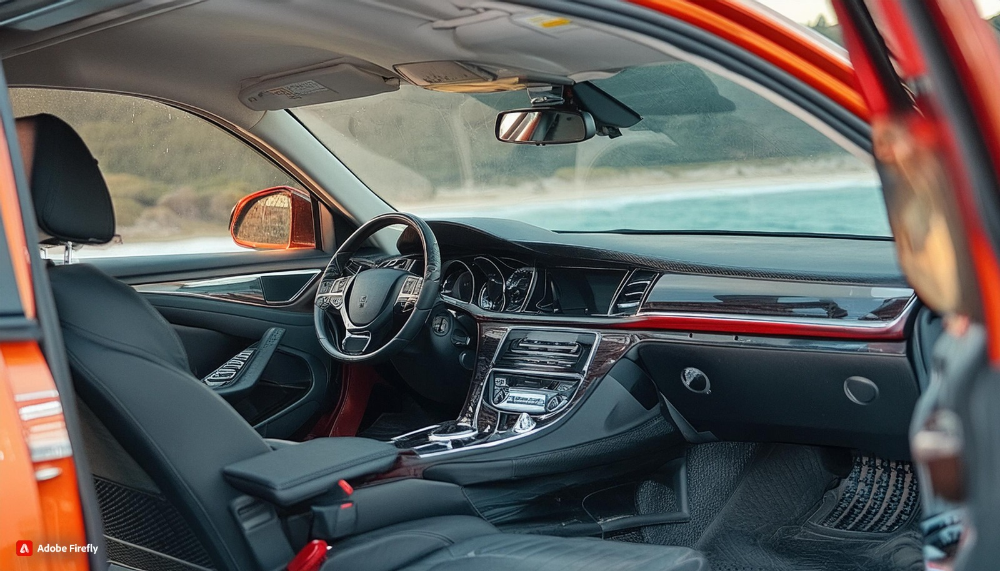
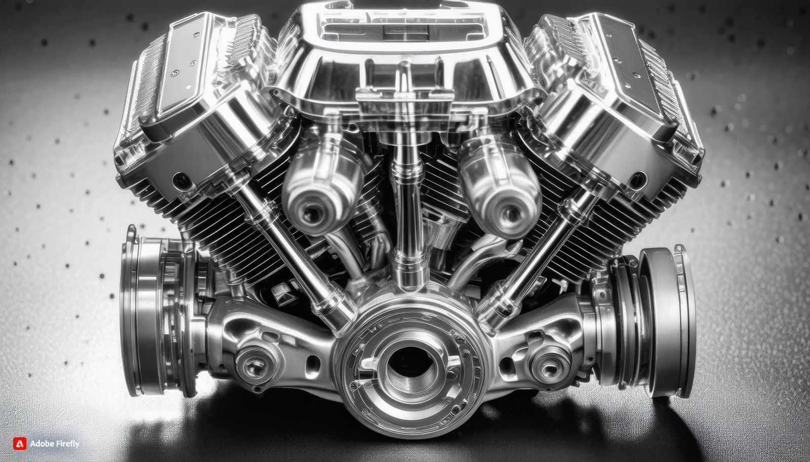

¡Bienvenidos a MQRG, tu destino para encontrar los autos de tus sueños! Somos una empresa fundada en España en el año 1992 por cuatro amigos apasionados: un talentoso dibujante, un entusiasta del mundo del motor,
un visionario con una gran imaginación y un conductor experto. Desde nuestros días universitarios, cuando obtuvimos nuestros títulos, siempre tuvimos el sueño de crear una empresa que ofreciera a nuestros clientes
una experiencia excepcional y cómoda, combinada con la mejor asistencia y calidad de vehículos del mercado a precios accesibles.
En MQRG, nos esforzamos por garantizar que cada cliente se sienta especial y bien atendido. Nuestro compromiso con la excelencia en el servicio al cliente es incomparable. Nos dedicamos a brindar una atención
personalizada y profesional, desde el momento en que pones un pie en nuestras instalaciones hasta que sales conduciendo el automóvil de tus sueños.
En MQRG, no solo vendemos autos, ¡sino que creamos experiencias inolvidables! Te invitamos a visitarnos y descubrir por qué somos la elección número uno para aquellos que buscan calidad, confianza y pasión por
los automóviles. ¡Estamos aquí para hacer realidad tus sueños automovilísticos!
Carroceria Potente
Este automóvil ofrece un interior que combina lujo, comodidad y tecnología para una experiencia de conducción excepcional. Al entrar, serás recibido por asientos de cuero suave, diseñados ergonómicamente para brindar un soporte óptimo durante largos viajes. La iluminación ambiental ajustable crea un ambiente acogedor y moderno, mientras que los detalles en acabado de madera o aluminio añaden un toque de elegancia.
El panel de instrumentos presenta una interfaz intuitiva y fácil de usar, con una pantalla táctil de alta resolución que te mantiene conectado y entretenido en todo momento. El sistema de sonido premium envolvente te sumerge en una experiencia auditiva de alta fidelidad, mientras que la conectividad Bluetooth te permite realizar llamadas manos libres y reproducir tu música favorita desde dispositivos móviles.
El espacio interior es generoso, con amplio espacio para pasajeros y carga. Los controles de clima dual aseguran que tanto el conductor como los pasajeros puedan ajustar la temperatura a su preferencia individual. Además, los asientos traseros abatibles ofrecen flexibilidad adicional para transportar objetos grandes o equipos deportivos.
Con su diseño meticuloso y atención al detalle, este automóvil brinda un interior que hace que cada viaje sea una experiencia placentera y lujosa. ¡Ven y descubre cómo este vehículo puede elevar tu experiencia de conducción a un nivel completamente nuevo!

Interior comodo
Imagina el interior de un automóvil como un oasis de comodidad y sofisticación, donde cada detalle está diseñado para brindar una experiencia de conducción incomparable. Desde el momento en que entras, te envuelve una sensación de lujo y bienestar. Los asientos, cuidadosamente contorneados y tapizados con materiales de primera calidad, abrazan tu cuerpo con suavidad y soporte, invitándote a relajarte en cada viaje. Los acabados interiores, con su elegancia artesanal, crean un ambiente sereno y acogedor que te hace sentir como en casa, incluso cuando estás en movimiento. La iluminación ambiental suave y ajustable agrega un toque de calidez y personalización, mientras que la tecnología de vanguardia te mantiene conectado y entretenido en todo momento. Ya sea que estés haciendo un viaje corto por la ciudad o recorriendo largas distancias en carretera, el interior de este automóvil te brinda el confort y la tranquilidad que necesitas para disfrutar al máximo del viaje. Es un santuario sobre ruedas, donde el estrés se disipa y cada momento se vive con calma y serenidad.

Motor potente
Imagina un motor que es como el corazón palpitante de un atleta de élite, latiendo con una fuerza inigualable bajo el capó del automóvil. Cada componente meticulosamente diseñado, desde los pistones hasta los árboles de levas, trabaja en armonía para desatar una potencia impresionante en cada pulsación. Cuando se enciende, este motor despierta con un rugido profundo y retumbante, una sinfonía de potencia que emana del metal y se funde con el aire. Cada aceleración es una experiencia visceral, una explosión de energía que impulsa el vehículo con una ferocidad indomable. Pero más allá de su poderío, este motor también es un ejemplo de ingeniería avanzada, con tecnologías innovadoras que equilibran el rendimiento y la eficiencia. Desde la inyección directa de combustible hasta la gestión electrónica del motor, cada avance contribuye a una experiencia de conducción emocionante y, al mismo tiempo, eficiente. En resumen, este motor potente es mucho más que una máquina: es la encarnación misma de la pasión por la velocidad y la excelencia técnica, una fuerza impulsora que eleva la experiencia de conducción a nuevas alturas de emoción y rendimiento.